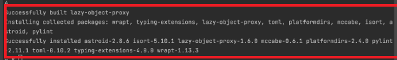
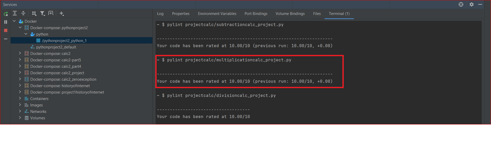
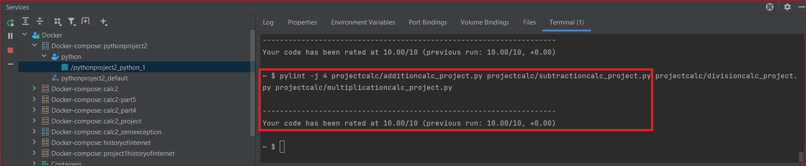

Pylint Article

The tool that checks for error in the python code and one that tries to enforce standards for coding is known as pylint. It checks for the certain type of error, also is suggests the steps that should be taken into consideration for resolving those errors.It’s highly configurable, having special pragmas to control its errors and warnings from within your code, as well as from an extensive configuration file. It is also possible to write your own plugins for adding your own checks or for extending pylint in one way or another.
Implementing the Pylint
The steps that are involved in implementation of the pylint are as follows :
1)Installation for python packages --
Command : pip install pylint

2)The pylint command needs to be run in the command line, the usage is as follows :
Command:pylint [options] modules or packages.
For Example: pylint projectcalc/additioncalc_project.py, pylint projectcalc/subtractioncalc_project.py, 3)pylint projectcalc/multiplicationcalc_project.py

3)Parallel Execution --
In order to speed up the execution of the pylint. This functionality is used via the -j command.If the provided number is 0, then the total number of CPUs will be autodetect and used.
Command:
Eg: pylint -j 4 mymodule1.py mymodule2.py mymodule3.py mymodule4.py

4) Exit Codes --
Pylint returns bit-encoded exit codes. If applicable, the table below lists the related stderr stream message output.
| Exit Code | Error Definition | Description | |
|---|---|---|---|
| 0 | Zero Error | Whenever pylint exits with zero code, it ensures that no error is existing in code. | |
| 1 | Fatal Message issued | It explains that some fatal error has occured during the execution of the code | |
| 2 | Error Message issued | This message lists the modules with the error code present in the project | |
| 4 | Warning Message issued | It indicates the warning occured in the program during the run time execution |
OOP Glossary List
| OOP Terms | Definition |
|---|---|
| Factory | Factory Method is a creational design pattern used to create concrete implementations of a common interface |
| Instantiation | Instantiation refers for creating an instance of an object. For example, defining one particular variation of object within a class, giving it a name, and locating it in some physical place. |
| Object | Object refers to any real world entity which can have some characteristics or which can perform some tasks. |
| Class | A class is the basis of all data in Python, everything is an object in Python, and a class is how an object is defined. Eg: Our calculator program has its own class of addition, subtraction, division, multiplication for performing its respective operation. |
| Namespace | It is a way to implement scope. For example, In Python, each package, module, class, function and method function owns a "namespace" in which variable names are resolved. |
| Constructors | Constructors are generally used for instantiating an object. The task of constructors is to initialize(assign values) to the data members of the class when an object of the class is created. |
| Fixtures | Fixtures define the steps and data that constitute the arrange phase of a test |
| Type Hint | Type hinting is a formal solution to statically indicate the type of a value within your Python code. |
| Type Cast | Type Casting is the method to convert the variable data type into a certain data type in order to the operation required to be performed by users. |
| Unit Test | Unit tests can pass or fail, and that makes them a great technique to check your |
| Static | Static methods are the methods in python that can be called without creating an object of class. |
| Class Methods | Class methods are methods that are called on the class itself, not on a specific object instance. |
| Facade | Facade is a structural design pattern that provides a simplified (but limited) interface to a complex system of classes, library or framework. |
| Method | A method is a function that “belongs to” an object. (In Python, the term method is not unique to class instances: other object types can have methods as well. For example, list objects have methods called append, insert, remove, sort, and so on. |
| Property | The property() method in Python provides an interface to instance attributes. It encapsulates instance attributes and provides a property, same as Java and C#. The property() method takes the get, set and delete methods as arguments and returns an object of the property class. |